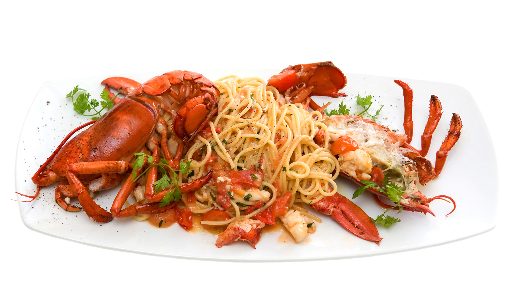
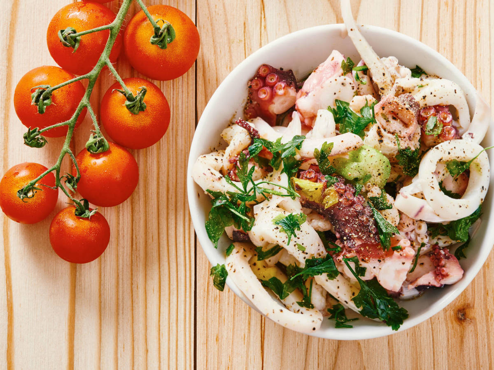

El marisco es, en gastronomía, un animal marino invertebrado comestible. En esta definición se incluyen normalmente los crustáceos (camarones, langostinos, cangrejos, percebes, entre otros), moluscos (mejillones, almejas, berberechos, chipirones, pulpos, entre otros) y otros animales marinos tales como algunos equinodermos (erizo de mar) y algunos urocordados (piure).
 |
 |
Tipos de mariscos
Los moluscos:
Los moluscos presentan muy poca grasa y son muy ricos en hierro, cobre, magnesio, yodo y sodio. Se comen crudos o cocidos enteros, o sólo el músculo, según las especies. Los moluscos se limpian previamente de su masa intestinal y a continuación se preparan marinados o cocidos.
Los crustaceos:
Los crustáceos se preparan de formas muy variadas: a la americana o en bisque, en fritura, pochados en caldo corto o asados a la parrilla. También se sirven como entremés frío: los de mayor tamaño se pelan (patas, pinzas y caparazón), mientras que los más pequeños se sirven enteros o sin su cabeza, con la cola pelada. Son muy apreciados en diversas regiones del mundo.
|  | Beneficios |
 |
| Su aporte de calcio, es beneficioso para la correcta salud ósea y prevención de la osteoporosis. Su contenido en yodo evita enfermedades como el bocio. Es importante también señalar que gracias a su bajo aporte calórico, es un alimento que puede incluirse en dietas indicadas para reducir el peso corporal. |  | Gracias a su contenido en grasas poliinsaturadas que disminuyen el riesgo de formación de coágulos, nos protegen ante la aparición de enfermedades cardiovasculares, reduciendo también, en sangre, grasas malas para el organismo como el colesterol. |
Camarón:
También es conocido como quisquilla o esquila. Pertenece a la familia de los Caridea. Es un crustáceo decadópodo, que puede habitar tanto en aguas dulces como saladas. Vive en regiones templadas, tropicales, y frías. Habita en zonas rocosas y arenosas poco profundas con abundancia de algas.
Langosta:
La langosta es uno de los alimentos más suculentos que puede ofrecer el mar. Los restaurantes mundiales más afamados pagan cifras astronómicas para poder disponer de uno de estos ejemplares en acuarios que muestran en el interior de sus instalaciones, presentándolas así en toda su frescura, incluso pudiendo el cliente escogerlas de entre las piezas expuestas.
Caracoles
Por su condición de herbívoros, son capaces de transformar proteínas vegetales en proteínas animales de alta calidad biológica y gastronómica. Su carne es rica en hierro, calcio, magnesio, yodo, zinc y cobre.
Dentro de los mariscos, los más populares en nuestra cocina son los moluscos y los crustáceos, es decir, los mejillones, las almejas, los berberechos, chipirones y semejantes. Estos merecen un análisis aparte del pescado, pues poseen nutrientes diferentes y valiosas propiedades para nuestro cuerpo. Por tratarse de un ingrediente de origen animal, los mariscos ofrecen proteínas de alta calidad, pues contienen todos los aminoácidos esenciales. Son bajos en hidrato de carbono y la mayor parte de ellos tiene un bajo contenido graso, no alcanzando al 2% de su composición.

Deje su comentario: